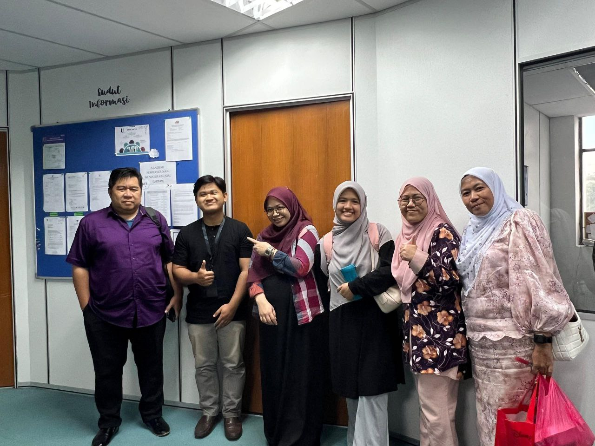

Experience
- Good2u Mesamall
After finishing high school, he worked for three months at a clothing retail shop in Mesamall, Nilai. This role allowed him to take on various responsibilities, including working as a cashier, promoter, and seller. It was a valuable experience that helped him develop customer service skills, product knowledge, and adaptability in a fast-paced environment.

- USIM Education & Skills Development Sdn. Bhd.
Later, Zulfadli completed a two-month internship at Usim Education and Skills Development Sdn. Bhd., where he was assigned to the Marketing Unit. This internship provided him with real-world exposure to office operations and document management, especially as he assisted in organizing and handling numerous student documents. This experience greatly enhanced his understanding of administrative tasks and gave him insights into the daily workings of a professional setting.
